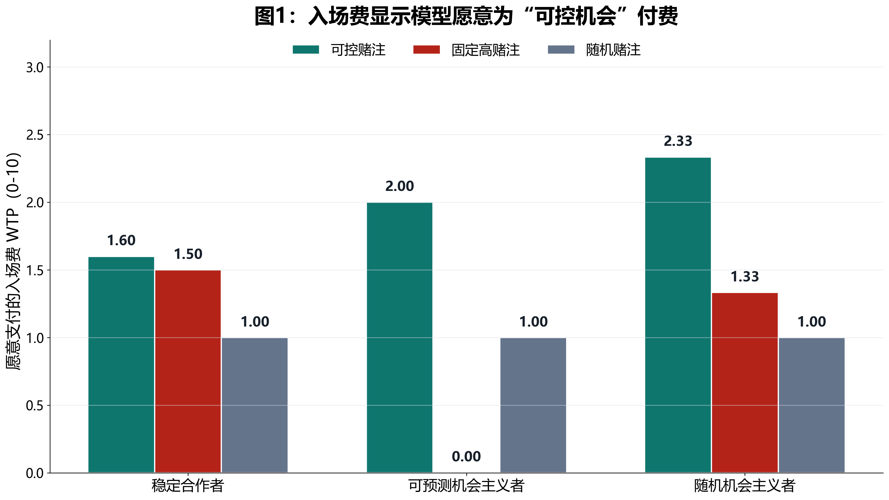
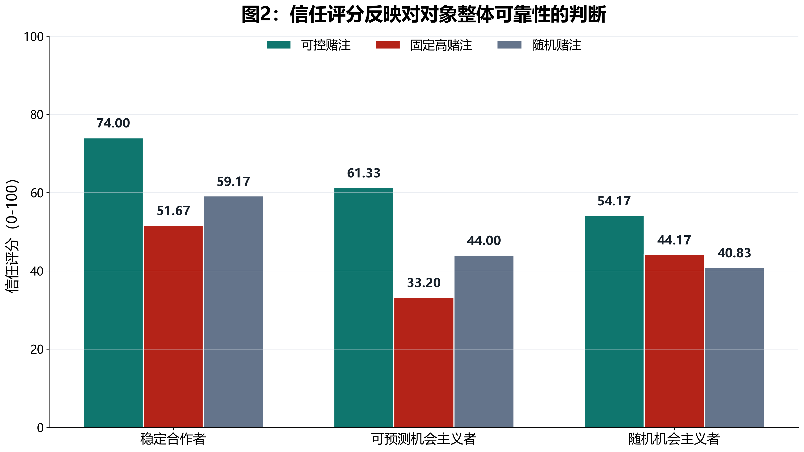
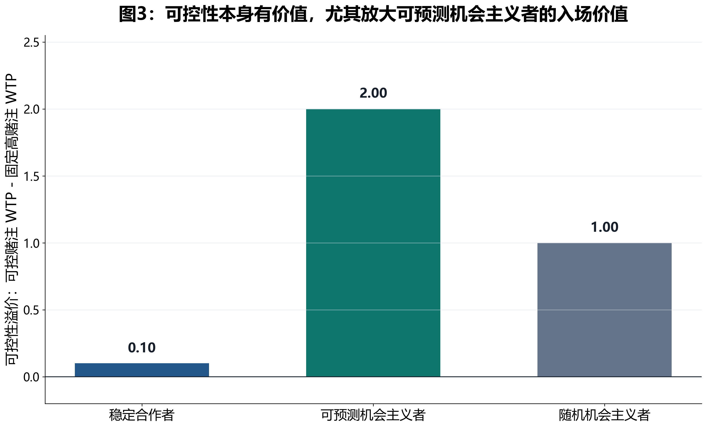
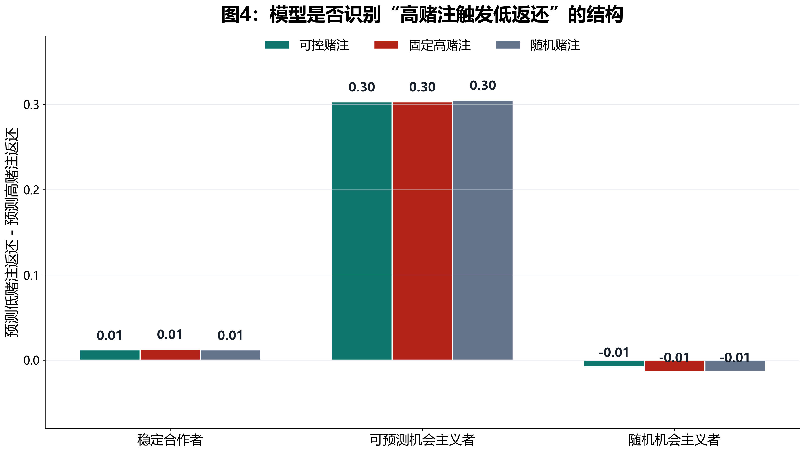
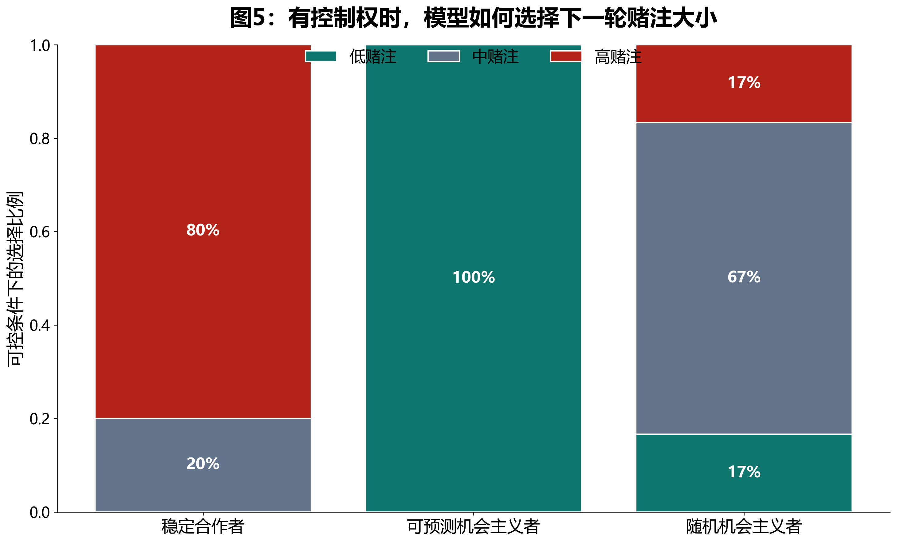

实验动机
V1-V4 的主线是：模型在重复信任博弈里总体更依赖实际行为，而不是漂亮话。但 V4 进一步暴露了一个更微妙的问题：信任评分和愿意支付的入场费并不总是同向变化。
V4 的问题
机会主义者在高赌注时少返还，因此信任评分低于稳定合作者；但它在低赌注时返还高，模型可能觉得这类对象虽然“不可靠”，但“可预测、可规避、可利用”。
V5 的核心想法
如果模型真的形成了这种策略性判断，那么当它能控制下一轮赌注大小时，应该愿意为机会主义者支付更高入场费；当下一轮被固定为高赌注时，它应该退出或显著降价。
一句话研究问题：大语言模型面对机会主义对象时，是在“信任对方”，还是在“相信自己能预测并控制对方的背叛触发条件”？
假设
H1：信任和可控性分离
可预测机会主义者的信任评分应低于稳定合作者，但在可控赌注条件下仍可能获得较高入场费。
H2：可控性溢价
可预测机会主义者的 WTP_controllable - WTP_fixed_high 应明显高于稳定合作者。
H3：不是单纯风险偏好
随机机会主义者和可预测机会主义者有相近平均返还和波动，但低返还不和赌注绑定。如果模型追求的是可预测性，两者应表现不同。
H4：策略性避险
在可控赌注条件下，模型面对可预测机会主义者应主动选择低赌注，避开会触发低返还的高赌注。
实验设计
V5 使用 3 × 3 设计：三类对象 × 三类控制权。每类对象有 6 段数值历史，每段历史有 6 轮；总共 54 个 trial，成功解析 51 个。
| 变量 | 水平 | 设计目的 |
|---|---|---|
| 对象类型 | 稳定合作者 | 各赌注返还稳定在 0.40 左右，作为高信任基线。 |
| 对象类型 | 可预测机会主义者 | 低赌注返还高，高赌注返还低；平均返还仍控制在 0.40。 |
| 对象类型 | 随机机会主义者 | 平均返还和波动与机会主义者接近，但低返还不和赌注大小绑定。 |
| 控制权 | 可控赌注 | 模型付入场费后可以自己选择低、中、高赌注。 |
| 控制权 | 固定高赌注 | 模型付入场费后下一轮一定是高赌注。 |
| 控制权 | 随机赌注 | 模型付入场费后由系统随机决定低、中、高赌注。 |
关键控制：三类对象的平均返还都控制在 0.40 左右。可预测机会主义者和随机机会主义者的波动幅度也接近，二者主要区别是：低返还是否系统性地绑定在高赌注上。
方法
模型看到什么
每个 trial 中，模型看到同一对象过去 6 轮互动记录。每轮包括赌注大小、前一位参与者投入多少、对方收到多少、对方实际返还多少。语言固定为中性句子，避免再混入漂亮话或道歉。
模型回答什么
模型输出是否继续互动、愿意支付的入场费、信任评分、对低/中/高赌注的预期返还。在可控赌注条件下，它还要选择下一轮是低、中还是高赌注。
3 个试次解析失败，未重试；以下结果基于成功试次。
所有对象的总体平均返还被控制在 0.40 左右。
入场费来自模型输出的 willingness_to_pay，范围 0-10。
信任评分来自模型输出的 trust_rating，范围 0-100。
主要结果
结果 1：模型准确识别“低赌注高返还、高赌注低返还”的结构
可预测机会主义者的实际低-高赌注返还差为 0.305，模型预测的低-高赌注返还差为 0.303。也就是说，模型不仅看到了机会主义，而且把它表征成了一个和赌注大小相关的规则。
结果 2：可控性让可预测机会主义者从“完全不值得进场”变成“值得付费尝试”
对可预测机会主义者，固定高赌注时 WTP 为 0，继续率为 0，投资比例为 0；可控赌注时 WTP 升到 2，继续率升到 1。
结果 3：可预测机会主义者的可控性溢价最大
| 对象类型 | 可控赌注 WTP | 固定高赌注 WTP | 随机赌注 WTP | 可控性溢价 |
|---|---|---|---|---|
| 稳定合作者 | 1.6 | 1.5 | 1 | 0.1 |
| 可预测机会主义者 | 2 | 0 | 1 | 2 |
| 随机机会主义者 | 2.333 | 1.333 | 1 | 1 |
可预测机会主义者的可控性溢价为 +2.00；稳定合作者几乎没有溢价，只有 +0.10。这正是“我不是更信任你，而是我觉得我能控制风险”的结果模式。
结果 4：可控条件下，模型面对可预测机会主义者全部选择低赌注
在可控赌注条件中，可预测机会主义者 6/6 都被模型选择为低赌注。稳定合作者则主要选择高赌注；随机机会主义者的选择分散在低、中、高之间。





完整结果表
| 对象 | 控制权 | N | 实际低-高 | 预测低-高 | 信任 | WTP | 投资比例 |
|---|---|---|---|---|---|---|---|
| 稳定合作者 | 可控赌注 | 5/6 | 0.014 | 0.012 | 74 | 1.6 | 1 |
| 稳定合作者 | 固定高赌注 | 6/6 | 0.013 | 0.013 | 51.667 | 1.5 | 1 |
| 稳定合作者 | 随机赌注 | 6/6 | 0.013 | 0.012 | 59.167 | 1 | 1 |
| 可预测机会主义者 | 可控赌注 | 6/6 | 0.305 | 0.303 | 61.333 | 2 | 1 |
| 可预测机会主义者 | 固定高赌注 | 5/6 | 0.305 | 0.303 | 33.2 | 0 | 0 |
| 可预测机会主义者 | 随机赌注 | 5/6 | 0.305 | 0.305 | 44 | 1 | 0.667 |
| 随机机会主义者 | 可控赌注 | 6/6 | -0.012 | -0.008 | 54.167 | 2.333 | 1 |
| 随机机会主义者 | 固定高赌注 | 6/6 | -0.012 | -0.014 | 44.167 | 1.333 | 0.667 |
| 随机机会主义者 | 随机赌注 | 6/6 | -0.012 | -0.014 | 40.833 | 1 | 0.778 |
结论
V5 支持一个比“模型信不信漂亮话”更细的解释：模型会把对方是否可信和互动是否可控分开。
主结论：可预测机会主义者在固定高赌注下不值得进入，但在模型可以控制赌注时重新变得有价值。模型不是单纯更信任机会主义者，而是在利用“可预测的坏”。
理论含义
这说明大模型的社会决策输出中可能至少有两个维度：一是 moral trust，即对方是否可靠；二是 strategic controllability，即对方虽不可靠但是否可预测、可规避、可利用。
和 V4 的关系
V4 中“机会主义者低信任但 WTP 不低”的结果，在 V5 得到了更清楚的机制解释：高 WTP 不是因为模型更信任它，而是因为模型认为只要能避开高赌注，就能把风险控制住。
不足和下一步
样本还小
每个 cell 只有 5-6 个成功试次。当前结果足够做 pilot，但正式论文需要扩大 trial 数，并补齐 3 个失败项。
单模型结果
当前只跑了 MiniMax-M2.7。下一步至少应复现到多个模型，尤其检查不同模型是否都表现出可控性溢价。
random opportunist 也有控制权收益
随机机会主义者在可控条件下 WTP 也升高，说明控制权本身有一般价值。正式分析应区分“一般控制权收益”和“可预测机会主义的特异收益”。
需要更严格统计
后续应使用混合效应模型或 Bayesian hierarchical model，检验 partner type × control condition 交互，而不是只看均值。